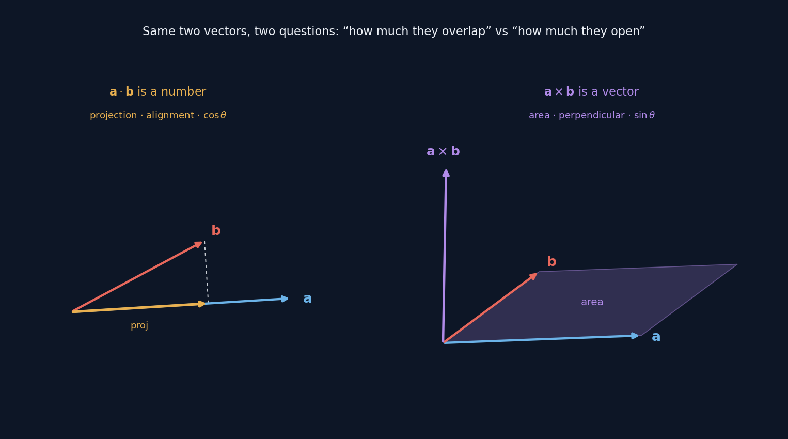
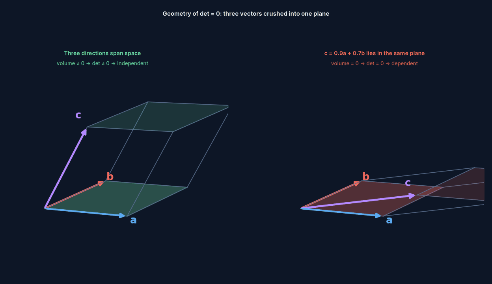
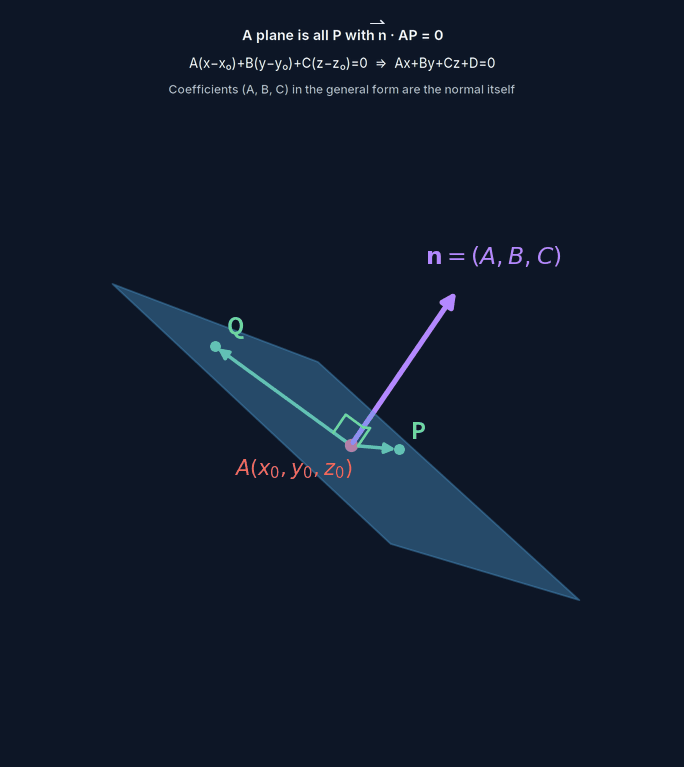
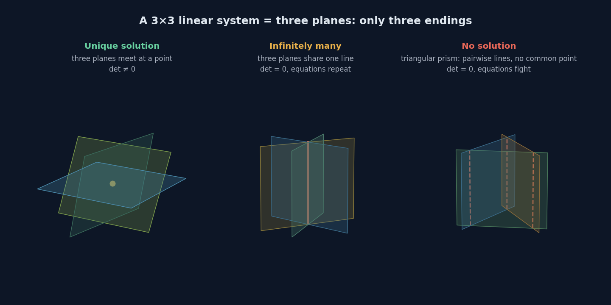

Vectors & Space
The dot product measures overlap, the cross product measures spread, the determinant measures volume — three faces of the same idea, showing up at different dimensions.
This isn't written like a textbook chapter. Definitions, worked examples, exam technique — your actual textbook already has those. What's here is three things: what each idea is actually measuring, where it sits in the bigger structure, and where it's spinning in the real world.
That last one is the point — the four draggable 3D demos further down are what this page is really trying to say.
One thread: how many dimensions can you span
Every idea in this section is answering the same question from a different angle: how much space can a set of directions cover.
1 vector → one dimension, a line length $|\mathbf a|$
2 vectors → two dimensions, a plane area $|\mathbf a\times\mathbf b|$
3 vectors → three dimensions, a volume volume $|\mathbf a\cdot(\mathbf b\times\mathbf c)|$
And when it fails to span:
$\det=0$ ⟺ coplanar ⟺ linearly dependent ⟺ one direction is redundant
Equation systems work the other way: they subtract. Three-dimensional space starts with three degrees of freedom, and every equation removes one. Three independent equations reduce that to zero, handing you a single point; if one equation is redundant, you're left with a whole line or plane instead. "The dimension of the solution" is counted exactly this way.
Eleven scenes you can drag
The animation below walks this whole thread from the start: where length comes from, why $\overrightarrow{AB}=\mathbf b-\mathbf a$ is "end minus start," whether a projection carries a sign, why the cross product ends up perpendicular, how area and volume fall out of it. Every scene rotates, scrubs through time, and can leave a trail.
Five ideas
Dot Product
- What it is
- $\mathbf a\cdot\mathbf b=\sum a_ib_i=|\mathbf a||\mathbf b|\cos\theta$ — two vectors give back a single number.
- What it measures
- Projection. How long a shadow $\mathbf a$ casts along $\mathbf b$'s direction, scaled by $\mathbf b$'s own length. So it measures how much two directions overlap.
- Where it sits
- The three-dimensional case of an inner product. It defines length ($|\mathbf a|^2=\mathbf a\cdot\mathbf a$) and angle — meaning geometry itself grows out of the dot product. It exists in any dimension, not just three, and leads on to inner product spaces, orthogonal projection, Gram–Schmidt, least squares, Fourier analysis.
- When it's zero
- Perpendicular. No shadow at all — one direction contributes nothing to the other.
Cross Product
- What it is
- $\mathbf a\times\mathbf b$ — two vectors give back a vector, with $|\mathbf a\times\mathbf b|=|\mathbf a||\mathbf b|\sin\theta$.
- What it measures
- Two things at once: its length is the area of the parallelogram the two vectors span, and its direction is the normal to that plane.
- Where it sits
- Only exists in three dimensions — it relies on "the direction perpendicular to a plane" being unique, which is only true at $n=3$. In two dimensions you'd have to step outside the plane; in four there'd be infinitely many. It leads on to the exterior product and differential forms — the version that works in any dimension.
- When it's zero
- Parallel. The parallelogram collapses to a line, area zero.
The two products aren't two separate tools sitting side by side — together they account for everything a pair of vectors can tell you:
one takes $\cos$, the other takes $\sin$; together, everything
So "which one do I need" is never really a hard question: are you after the overlap, or the spread.

Determinant
- What it is
- $n$ vectors in $n$ dimensions give back a number. In three dimensions it's the scalar triple product $\mathbf a\cdot(\mathbf b\times\mathbf c)$.
- What it measures
- Signed volume. Order two is area, order three is volume, order $n$ is $n$-dimensional volume. The sign records orientation — left-handed or right-handed.
- Where it sits
- The cross product's "area" generalised to any dimension. Its seemingly arbitrary properties are all geometry: swap two rows and the sign flips (orientation reverses), scale a row by $k$ and the value scales by $k$ (one edge stretched), add a multiple of one row to another and the value doesn't change (a shear — same base, same height). That last property is what makes Gaussian elimination legal.
- When it's zero
- Failure to span. Coplanar vectors, linear dependence, a non-invertible matrix, a system without a unique solution — different names for the same fact.

The Plane Equation
- What it is
- $\mathbf n\cdot(\mathbf r-\mathbf r_0)=0$, which expands to $Ax+By+Cz+D=0$.
- What it measures
- It's exactly a level set of the dot product. $\mathbf n\cdot\mathbf r=$ a constant — every point on the plane has the same projection along the normal.
- Where it sits
- The coefficients $(A,B,C)$ in the general form are the normal vector itself — see $2x-3y+z=7$ and you should read off $(2,-3,1)$ immediately. Distance from a point to the plane, $d=|\overrightarrow{AQ}\cdot\hat{\mathbf n}|$, is another projection. Leads on to hyperplanes — the classification boundaries in machine learning are exactly this.
- When it fails
- If $\mathbf n=\mathbf 0$ the equation degenerates — it's no longer a plane. If $\mathbf n_1\times\mathbf n_2=\mathbf 0$, the two planes are parallel.

Gaussian Elimination
- What it is
- Reduce a system to echelon form, then back-substitute. Each equation is a plane; solving the system is finding where they meet.
- What it measures
- What makes it legal in the first place: any linear combination of $\pi_1$ and $\pi_2$ still passes through their original line of intersection (a pencil of planes). So swapping in a combined equation loses no solutions — this is exactly the same shear property from the determinant, "add a multiple of one row to another."
- Where it sits
- Rank = the number of nonzero rows in echelon form = the number of genuinely independent equations. So the dimension of the solution = 3 − rank — the rank–nullity theorem, in three dimensions. Leads on to LU decomposition, the foundation under nearly all scientific computing.
- When it's zero
- A final row of $0\ 0\ 0\mid 0$ means infinitely many solutions (redundant information); $0\ 0\ 0\mid k$ means no solution (contradictory equations). A determinant alone can only tell you "unique or not" — it can't distinguish these two.

Where they're spinning in the real world
The four demos below all rotate, all take dragged sliders as live input. They aren't four pictures of the same idea — they're the same formula doing four completely unrelated jobs.
Four completely unrelated things — an electric field crossing a plate, one pixel's brightness, a building's noon shadow, how high to tilt an antenna — and underneath, it's the same projection. The maths you learned has been running around you the whole time.
One more: the plane's four sliders
Worth a look: the red and blue arrows on that plane are built from two cross products — pick any direction perpendicular to $\mathbf n$, then take $\mathbf n\times$ that direction to get the third. It's the same trick a ground station uses to build east, north and zenith under its feet.
The page beneath the calculations
Textbooks phrase every question in this chapter as "find some vector." Line them up side by side and something the textbook never says out loud becomes visible: they're all the same equation system — they just hand you different numbers of conditions.
1 equation → 2D solution space, a whole plane → asks you to "find two non-parallel ones"
2 equations → 1D solution space, a line → the answer is $k(3,-1,1)$, $k\ne0$
2 equations + a length condition → two points → the answer is exactly $\pm$ a pair
Why does 12L Q17 ask for "any two," while 12N.1 Q11's answer is stubbornly "exactly two"? Not the setter's preference — the dimension of the solution space decides it. Likewise, "parallel," "collinear," "cross product is zero," "area is zero" are scattered across four different sections of the textbook, and underneath they're the same fact: rank collapse.
One step further
And the rank, solution space, and linear dependence in that table are exactly the entry point to the next section — once equations get written as matrices, each of those words gets its own geometric shape.
Full notes
What's on the page is the spine. The full version runs to about 18,000 characters with fourteen embedded 3D figures, derivations, worked examples, and layered practice questions — Markdown, opens or prints in any editor.
Friendship code, please
请输入友情码
Hint: who said the line on the front page? His surname will do.
线索：首页那句话是谁说的？填他的姓。
Not quite — try again